アンチロック ブレーキ システムのモデル化
このデモでは、アンチロック ブレーキ システム (ABS) の単純なモデルについて説明します。ハード ブレーキングの条件下で自動車の動的動作をシミュレートします。このモデルは、多輪自動車のモデルを作成するために何回でも複製できる単一の車輪を表しています。
このモデルは、Simulink® の信号ログ機能を使用します。このモデルは、MATLAB® ワークスペースに信号をログします。そこで信号を解析および表示できます。sldemo_absbrakeplots.m のコードを表示して、これがどのように行われるかを確認できます。
このモデルでは、sldemo_wheelspeed_absbrake.mdl という別のモデルで車輪速度が計算されます。このコンポーネントは、その後、Model ブロックを使用して参照されます。最上位モデルと参照モデルの両方が可変ステップ ソルバーを使用するため、Simulink は参照モデル内のゼロクロッシングを追跡することに注意してください。
目次
解析と物理学
車輪は、ブレーキをかける前の車両速度に対応する初期角速度で回転します。別個の積分器を使用して車輪角速度と車両速度を計算しました。2 つの速度を使用してスリップを計算します。これは、方程式 1 によって求められます。角速度として表される車両速度を導入していることに注意してください (下記参照)。
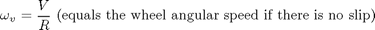
方程式 1
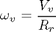
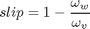
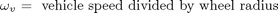
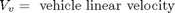

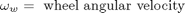
これらの式から、車輪速度と車両速度が等しい場合、すべりは 0 であり、車輪がロックされている場合、すべりは 1 であることがわかります。望ましいすべり値は 0.2 です。つまり、車輪回転数は、車両速度が同じで、ブレーキなしの条件下での回転数の 0.8 倍に等しくなります。これはタイヤと路面間の粘着力を最大化し、利用可能な摩擦で停止距離を最小化します。
モデル化
タイヤと路面間の摩擦係数 mu は、mu スリップ曲線と呼ばれる、すべりの経験的関数です。Simulink ルックアップ テーブルを使用するブロック線図に MATLAB 変数を渡すことによって、mu スリップ曲線を作成しました。このモデルでは、摩擦係数 mu に、車輪にかかる重量 W を乗算して、タイヤの周囲に作用する摩擦力 Ff を算出します。Ff を車両の質量で割ると、車両減速度が得られます。このモデルでは、これを積分して車両速度を求めます。
このモデルでは、実際のすべりと望ましいすべりの間の誤差に基づいてバンバン制御を使用する、理想的なアンチロック ブレーキ コントローラーを使用しました。望ましいすべりを、mu スリップ曲線がピーク値に到達するすべりの値に設定しました。このピーク値は、最小制動距離の最適値です (下のメモを参照)。
- メモ:実際の車両では、すべりを直接測定することはできないため、この制御アルゴリズムは実用的ではありません。このアルゴリズムは、この例題で、このようなシミュレーション モデルの概念構築を説明するために使用されます。このようなシミュレーションの実際の工学値は、特定の実装問題に対処する前に制御概念の可能性を示す必要があります。
デモ用の一時ディレクトリの作成
このデモンストレーションの間、Simulink は現在の作業ディレクトリにファイルを生成します。このディレクトリにファイルを生成したくない場合は、作業ディレクトリを適当なディレクトリに変更してください。
origdir = cd(tempdir);
モデルを開く
このモデルを開くには、MATLAB 端末に sldemo_absbrake と入力するか、(MATLAB ヘルプを使用している場合は、ハイパーリンクをクリックします)。

図 1: アンチロック ブレーキ (ABS) モデル
モデル ウィンドウで Wheel Speed サブシステムをダブルクリックしてこれを開きます。車輪すべりと、望ましい車輪すべり、タイヤ トルクが与えられた場合に、このサブシステムは車輪角速度を計算します。
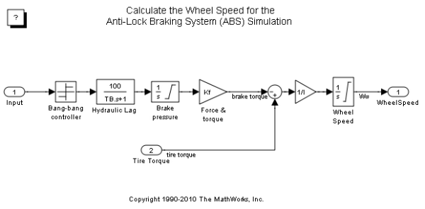図 2: 車輪速度サブシステム
ブレーキ圧力の変化率を制御するために、このモデルは、望ましいすべりから実際のすべりを引き、この信号をバンバン制御に送ります (誤差の符号に応じて、+1 または -1。図 2 を参照)。このオン/オフ率は、ブレーキ システムの油圧パイプに関連付けられている遅延を表す 1 次ラグを通過します。次に、このモデルはフィルター処理された率を積分して、実際のブレーキ圧力を算出します。車輪に対するピストン面積およびピストン半径 (Kf) で乗算される結果の信号は、車輪に適用されるブレーキ トルクです。
このモデルは、車輪に対する摩擦力に、車輪半径 (Rr) を乗算して、車輪に対する路面の加速トルクを得ます。ブレーキ トルクを減算して、車輪に対する正味のトルクを得ます。正味トルクを車輪の回転慣性 I で割ると、車輪加速度が得られます。これを積分して車輪速度を得ます。車輪速度と車両速度を正に保つために、このモデルでは制限付き積分器が使用されます。
ABS モードでのシミュレーションの実行
モデル ツール バーの [再生] ボタンを押してシミュレーションを実行してください。MATLAB で sim('sldemo_absbrake') コマンドを実行して、シミュレーションを実行することもできます。このシミュレーションの間、ABS はオンになります。
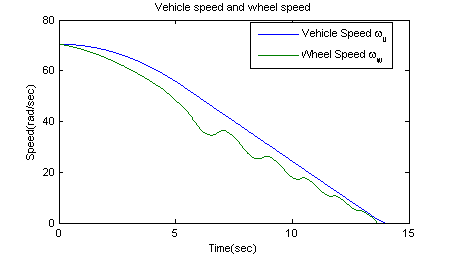 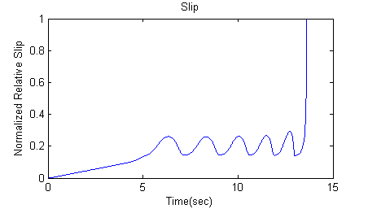図 3: ベースラインのシミュレーション結果
- メモ:このモデルは、MATLAB ワークスペースの sldemo_absbrake_output という構造体に関連データのログを作成します。ログが作成された信号は青色のインジケーターを持ちます。この場合、yout と slp のログが作成されます (モデルを参照)。信号ログの詳細は、Simulink ヘルプを参照してください。
図 3 は、(既定パラメーターについて) ABS シミュレーションの結果を可視化したものです。図 3 の最初のプロットは、車輪角速度とこれに対応する車両角速度を示しています。このプロットは、ロックしない場合、車輪速度は車両速度を下回ったままであり、車両速度が 15 秒未満で 0 になることを示しています。
ABS なしでシミュレーションを実行
より意味のある結果を得るために、ABS なしで自動車の動作を検討します。MATLAB コマンド ラインで、モデル変数 ctrl = 0 を設定します。これにより、コントローラーからスリップ フィードバックが切断され (図 1 を参照)、その結果、ブレーキが最大になります。結果を図 4 に示します。
ctrl = 0;
ここで、シミュレーションを再度実行します。これにより、ABS なしのブレーキがモデル化されます。
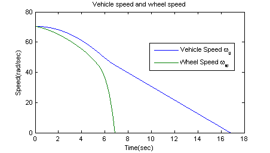 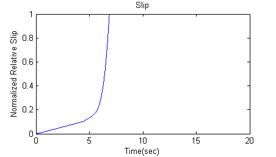図 4: 最大ブレーキ シミュレーションの結果 (ABS なしのブレーキ)
ABS 付きのブレーキと ABS なしのブレーキ
図 4 の上のプロットで、車輪が約 7 秒でロックされるのを確認します。その時点から、スリップ曲線の最適でない部分でブレーキがかかります。つまり、slip = 1 の場合、図 4 の下のプロットに示すように、タイヤは路面上を大きくスリップするため、摩擦力が減少します。
これは、おそらく、図 5 に示す比較の観点から見るとより意味があります。2 つのケースについて車両が移動する距離がプロットされています。ABS なしの場合、車両はさらに約 100 フィートスリップし、停止するまでに約 3 秒長くかかります。
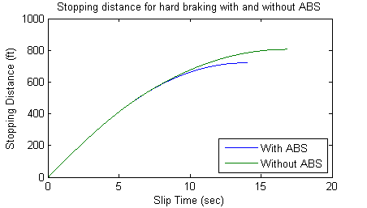図 5: ABS 付きの場合と ABS なしの場合のハード ブレーキングの停止距離
モデルを閉じる
モデルを閉じます。Wheel Speed サブシステムを閉じます。ログを作成したデータをクリアします。元のディレクトリに戻ります。
cd(origdir);
まとめ
このモデルでは、Simulink を使用して、ABS コントローラーの作用下でブレーキ システムをシミュレートする方法を示しました。この例題のコントローラーは理想的ですが、提案された任意の制御アルゴリズムを代わりに使用してシステムのパフォーマンスを評価できます。提案されたアルゴリズムのラピッド プロトタイピング用の貴重なツールとして、Real-Time Workshop® を Simulink と共に使用することもできます。コントローラー ハードウェアが車両で概念をテストできるように、C コードが生成され、コンパイルされます。これにより、開発サイクルの初期段階で実際のテストが可能になるため、新しいアイデアを証明するために必要な時間が大幅に短縮されます。
ハードウェアインザループのブレーキ システム シミュレーションの場合、バンバン コントローラーを削除し、リアルタイム ハードウェアで運動方程式を実行して、車輪と車両のダイナミクスをエミュレートできます。そのためには、Real-Time Workshop を使用して、このモデルについてリアルタイム C コードを生成します。次に、実際の ABS コントローラーをテストするには、生成されたコードを実行するリアルタイム ハードウェアにこのコントローラーをインターフェイス接続します。このシナリオでは、リアルタイム モデルは車輪速度をコントローラーに送信し、コントローラーはブレーキ アクションをモデルに送信します。